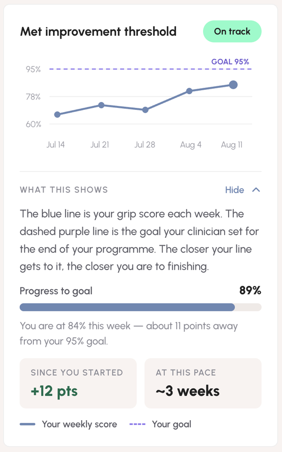
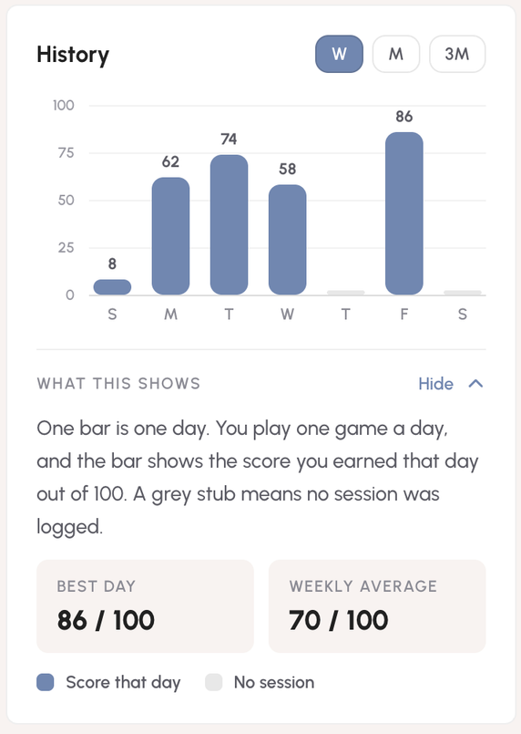
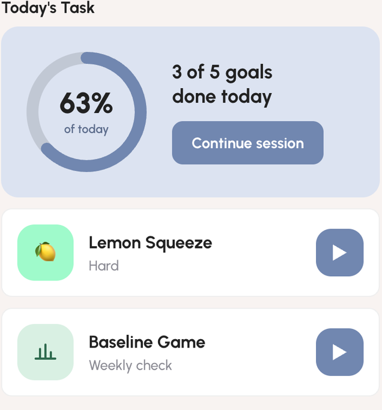

A dual-interface app for clinicians and patients. It bridges the two sides and lets patients do rehabilitation training remotely, with XREAL checking each movement.
This is a dual-interface app for both clinicians and patients, serving as a bridge to facilitate communication between them and enabling patients to perform rehabilitation training remotely.
It aims to increase patient motivation during recovery, thereby improving recovery rates. We use XREAL to detect whether the patient’s movements are performed correctly.
How a patient moves from the play button into a Lemon Squeeze session.
Patients see their recovery stats and pair their XREAL glasses; clinicians see license details, an audit log and their clinical obligations.
Completing a session sends squeezes, peak %, points and the difficulty rating into the patient’s record and session history.
Publishing a plan sets the level and targets that the patient’s Recommended mode runs against.
One thread: the patient writes in Clinician feedback, the clinician answers from Messages, optionally via quick replies.
Send reminder nudges the patient to train; clinical notes stay on the clinician side and shape the next plan.
Testers weren’t sure how to read the trend line and history bars, so each chart now has a “What this shows” panel.


A weekly Baseline Game now sits under Today’s Task, giving a consistent reference point for progress.
